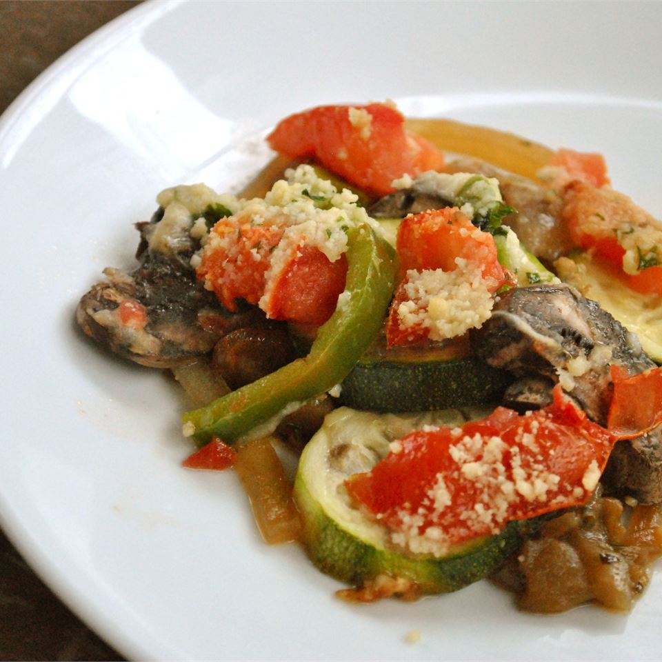

Ratatouille

Loaded with succulent Mediterranean vegetables and ready in an hour
Ratatouille is a French Provençal dish of stewed vegetables which
originated in Nice, and is sometimes referred to as ratatouille niçoise
(French: [niswaz]).[1] Recipes and cooking times differ widely, but common
ingredients include tomato, garlic, onion, courgette (zucchini), aubergine
(eggplant), capsicum (bell pepper), and some combination of leafy green
herbs common to the region.
Ingredients
- 2 tablespoons olive oil, divided
- 3 cloves garlic, minced
- 1 eggplant, cut into 1/2 inch cubes
- 2 teaspoons dried parsley
- salt to taste
- 1 cup grated Parmesan cheese
- 2 zucchini, sliced
- 2 large tomatoes, chopped
- 2 cups sliced fresh mushrooms
- 1 large onion, sliced into rings
- 1 green bell pepper, sliced
Steps
-
Preheat the oven to 350 degrees F (175 degrees C). Coat the bottom and
sides of a 1 1/2-quart casserole dish with 1 tablespoon olive oil.
-
Heat remaining 1 tablespoon olive oil in a medium skillet over medium
heat. Cook and stir garlic until fragrant and golden brown. Add eggplant
and parsley; cook and stir until eggplant is tender and soft, about 10
minutes. Season with salt to taste.
-
Spread eggplant mixture evenly across the bottom of the prepared
casserole dish; sprinkle with a few tablespoons of Parmesan cheese.
Spread zucchini in an even layer over top. Lightly salt and sprinkle
with a little more cheese. Continue layering in this fashion, with
tomatoes, mushrooms, onion, and bell pepper, covering each layer with a
sprinkling of salt and cheese.
- Bake in preheated oven until vegetables are tender, 45 minutes.